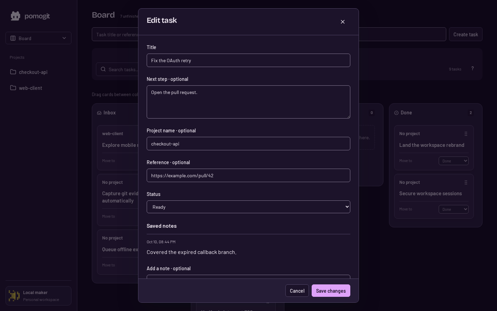
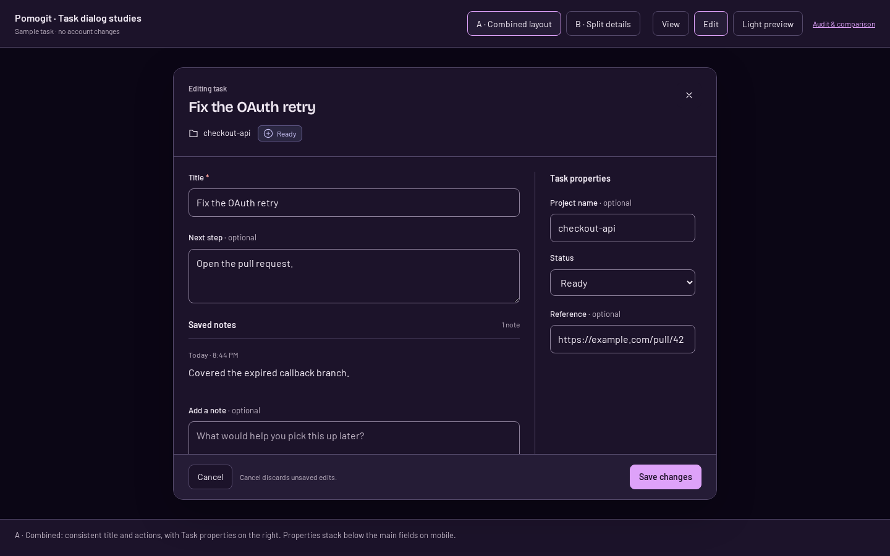
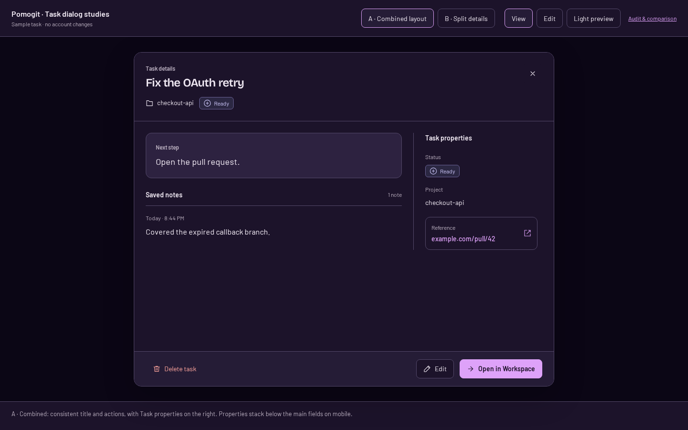
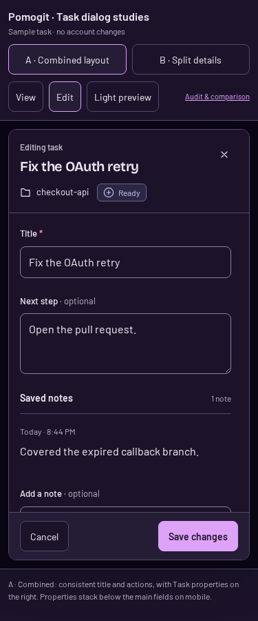
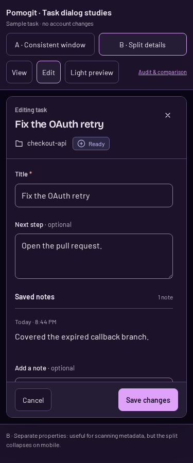

Task dialogs: review and two options
Recommendation: A — consistent window with Task properties on the right. Task identity stays visible while editing, and the header and actions stay fixed while the fields scroll. The revised A keeps its title and actions fixed, with B’s Task properties on the right on desktop. Properties stack below the main fields on mobile. B remains available for comparison.
Try A · Try B · Light theme
These are standalone studies with sample data. React has not been changed by this task. Cancel resets the sample draft; Save, Delete and Open in Workspace demonstrate intent without changing your data.
Audit findings
| Priority | Finding | Proposed response |
|---|
| Behavior mismatch | Cancel currently retains edits when reopening the editor. | Discard unsaved edits, as requested. |
| Consistency | The editor header says Edit task; the identifying title field scrolls away. | Keep the task title and project in the fixed header. |
| Optional hierarchy | Mobile footer gives Delete its own row. | Keep deletion secondary, with Edit and Open in Workspace together. |
Current app vs A
Current editor

A: consistent identity

A vs B
A: one reading path

B: properties column
A on mobile

B on mobile

Verification and probe reconciliation
Actual React audit: 24 dialog states across view/edit, light/dark and 375, 768, 1024, 1280, 1440 and 1920px. No overflow, scrolling header/footer failures or Cancel focus-return failures. The retained draft was reproduced separately.
Prototype interaction checks: 48 layouts across both options, modes, themes and six widths. Fixed header/footer and Cancel reset passed. Geometry probes also swept light layouts between 1440 and 375px.
| Probe flags | Disposition |
|---|
| Current view P1, both themes: Delete task wraps | Optional visual hierarchy finding; intentional separate row, 44px targets, no clipping. |
| All candidate P1: review toolbar wraps | Excluded from product defects: responsive controls for comparing studies, outside the task window. |
| All candidate P2: View/Edit toolbar wraps | Excluded from product defects: study toolbar, visually inspected and usable. |
| All candidate P3: comparison link under 24px | Fixed after probe: link now has a 44px minimum target. |
Current-app geometry snapshots were cross-checked separately from the live interaction audit. Saving, network errors and deletion are illustrative states in this HTML, not an end-to-end backend test.
Frontend lint, tests (13 files), and build passed. Nothing committed.